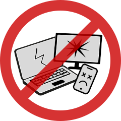
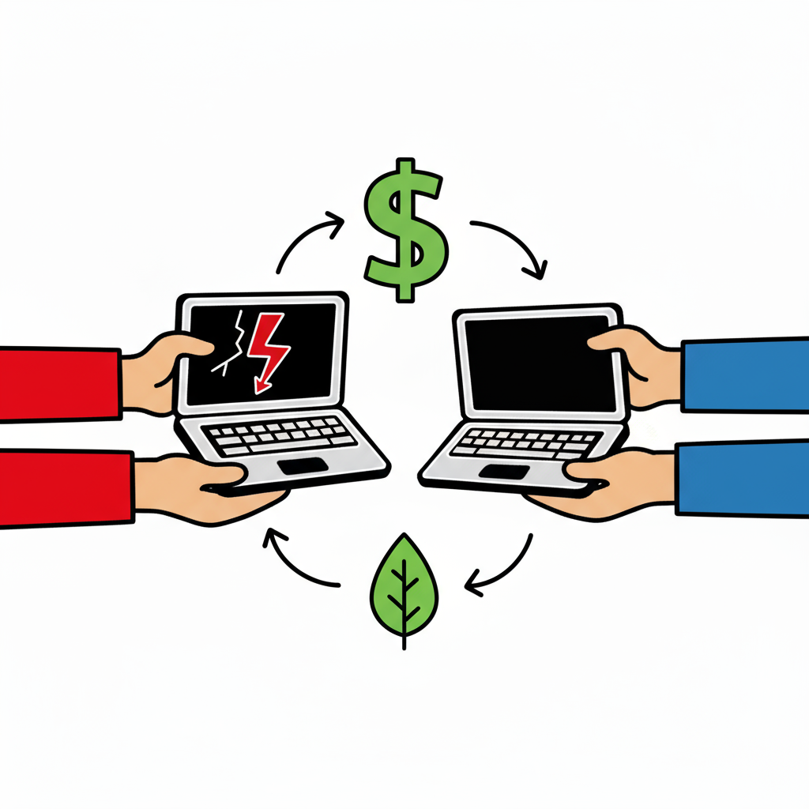
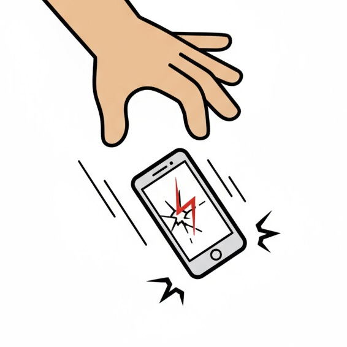
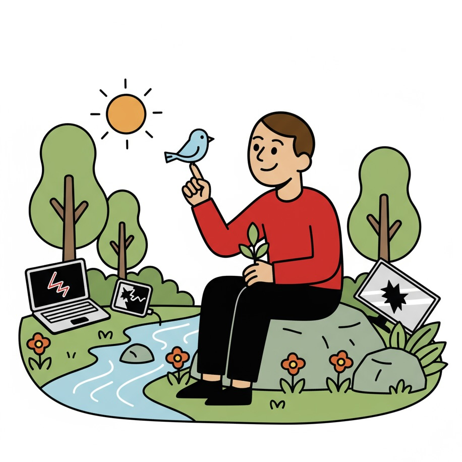

UHELD PÅ ELEKTRONIKFRONTEN?
Dit site til hjælp og rådgivning
Dit site til hjælp og rådgivning

Flere og flere køber brugt
De seneste år har unges måde at handle elektronik på ændret sig markant. Hvor man før gerne ville have den nyeste iPhone eller den største fladskærm, handler det nu om at være smart – både for klimaet og pengepungen. Og det kan mærkes hos Elgiganten. Salget af ny elektronik falder, mens brugtmarkedet stiger. Platforme som DBA, Facebook Marketplace og nye webshops med “refurbished” produkter oplever massiv vækst, især blandt forbrugere under 35 år. Kort sagt: De unge gider ikke betale fuld pris - og de vil hellere købe brugt end nyt. “Der er ikke længere status i at købe nyt. Tværtimod virker det mere bevidst og smart at genbruge,” siger forbrugerøkonom Mette Jensen.
Inflationen har gjort ny elektronik dyrere, og samtidig fylder bæredygtighed mere i hverdagen. Mange unge ser det som helt naturligt at købe brugt – ligesom man køber vintage tøj eller genbrugsmøbler. Det er ikke længere “secondhand”, men “smart buy”. “Unge forbrugere er vokset op med tanken om at dele, leje og genbruge. For dem er brugt ikke gammelt – det er fornuftigt,” fortæller Jens Holm, ekspert i bæredygtigt forbrug.
Elgiganten og andre kæder forsøger at tilpasse sig. De har lanceret kampagner med prisgaranti og begynder at sælge “refurbished” produkter, men konkurrencen fra peer-to-peer-markedet er hård. Når du kan finde den samme iPhone brugt til halv pris – og den virker perfekt – hvorfor så købe ny?
Elektronikbranchen står midt i et skifte. Flere producenter undersøger, hvordan de kan designe produkter, der holder længere, er lettere at reparere – og kan sælges igen. Fremtiden for elektronik handler ikke bare om salg, men om cirkulation. Hvis kæder som Elgiganten vil overleve, skal de blive en del af den cirkulære økonomi – ikke stå udenfor og se på. Og måske er det netop dér, den næste store mulighed ligger: I at gøre genbrug mainstream.
Til dig som er max klodset med din mobil
Er du også lidt klodset med din telefon? Måske ryger den lidt for tit ud af lommen - eller ender i tasken sammen med nøgler og nips? For det første: stop med det 😅 For det andet: beskyt den ordentligt. Et panserglas og et godt cover kan redde dig fra både revner og dyre reparationer. Her er de 5 bedste mobilcover-brands i 2025, som kombinerer design, kvalitet og holdbarhed.
OtterBox er det oplagte valg for dig, der har en tendens til at tabe telefonen lidt for tit. Deres covers er nærmest uopslidelige og beskytter mod både fald, ridser og slag. Fordel: Maksimal beskyttelse Ulempe: Kan føles lidt tung
Spigen har gjort sig fortjent til sin popularitet. Deres covers kombinerer et rent, minimalistisk look med solid beskyttelse. Du får et cover, der beskytter uden at gøre din telefon klodset. Fordel: Let og diskret design Ulempe: Begrænset udvalg i farver
Casetify er til dig, der vil have et cover, der skiller sig ud. De tilbyder tusindvis af designs – og du kan endda lave dit eget. Samtidig er de lavet af genbrugsmaterialer og beskytter overraskende godt. Fordel: Unikt design og bæredygtighed Ulempe: Lidt højere pris
UAG laver covers, der kan tåle en del tæsk. De er testet efter militærstandard og har et råt, industrielt look. Perfekt til dig, der lever et aktivt liv eller bare vil være på den sikre side. Fordel: Ekstrem holdbarhed Ulempe: Kraftigt design
Pela laver biologisk nedbrydelige covers, som både beskytter din telefon og miljøet. De er bløde, fleksible og behagelige at holde i hånden – og findes i mange farver. Fordel: Miljøvenligt og behageligt Ulempe: Ikke så robust som hårde covers
Sådan lever du uden elektronik (eller prøver på det)
Forestil dig dette: Du har mistet din telefon, din computer er stået af, og din oplader er forsvundet sporløst sammen med din livsvilje. Eller måske har du bare fået nok – nok af skærme, notifikationer og endnu en app, der vil “forbedre din søvn” (men i virkeligheden bare vækker dig med reklamer). Uanset hvad: Velkommen til den analoge æra 2.0. Her er din overlevelsesguide til livet uden elektronik – eller i det mindste med mindre af det.
Du kan faktisk tjekke tiden… på et ur. Et rigtigt ur. Sådan et med visere og måske endda rem. Bonus: Det vibrerer ikke, når nogen liker dit billede fra 2019. Hvis du ikke har et ur, kan du altid bruge den klassiske metode: se, hvor højt solen står – og gæt.
Overraskende nok kan man stadig drikke kaffe, selv når man ikke tager billeder af den. Sæt dig på en café, og prøv det revolutionerende: snak med et andet menneske. De fleste er faktisk flinke, når man ikke skriver til dem gennem emojis.
Har du hørt om bøger? De er som internettet, bare uden batteri og med færre konspirationsteorier. Du kan tage dem med overalt – og ingen kan sende dig en notifikation midt i et kapitel. Pro tip: De fleste biblioteker har aircondition, gratis stole og ingen reklamer.
Når man ikke stirrer på en skærm, kan man opdage mærkelige ting som… natur. Den har 3D-grafik, surround-lyd og ubegrænset batteritid. Prøv at gå en tur uden musik i ørerne. Hør fugle synge. Eller i det mindste naboens hund gø. Det tæller også som “naturlig lyd.”
Når du ikke har din telefon, kan du stadig kommunikere. Metoder inkluderer: Tale direkte til folk (kræver mod) Skrive et brev (kræver frimærke og tålmodighed) Råbe (kræver stærke lunger) Der går rygter om, at man faktisk føler sig mere nærværende, når man ikke tjekker sin skærm hvert 14. sekund.
Du kommer til at kede dig. Og det er helt okay. Det er faktisk i kedsomheden, de bedste idéer opstår. Mange store opfindelser startede med, at nogen tænkte: “Jeg har virkelig intet at lave…”
At miste sin elektronik – eller bare tage en pause fra den – føles i starten som at miste et ben. Men efter et par dage opdager du, at du kan gå alligevel. Bare uden konstant at skulle oplade noget. Og hvem ved? Måske opdager du, at virkeligheden faktisk har ret god grafik.